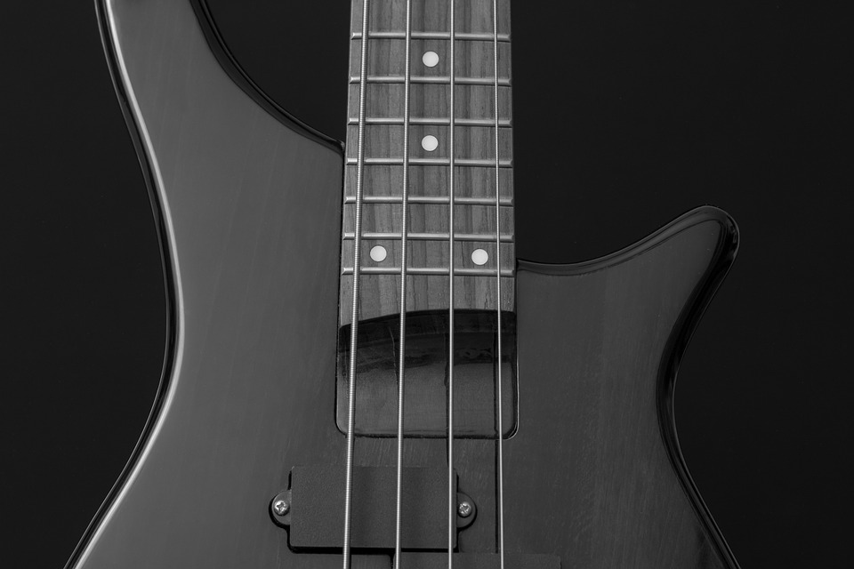

Aqui você pode ver um pocuo da historia da musica enquanto pode esculta uma boa musica clicando em
alguma banda acima. Tambem veja um pocuo sobre nois os criadores desse site :
About.
conheça um pouco sobre a historia da música e como começou tudo isso, ate chega nas mais
variadas tipos de sons, ritimos, instrumentos, culturas e entre outras formas de se fazer musica.
A História da música é muito antiga, visto que desde os primórdios os homens produziam diversas formas de sonoridade.
Lembre-se, portanto, que a música é um tipo de arte que trabalha com a harmonia entre os sons, o ritmo, a melodia, a voz.
Todos esses elementos são importantes e podem nos transportar para outro tempo e espaço, resgatar memórias e reacender emoções.
Veremos como essa linguagem artística caminhou durante os séculos até os nossos dias para adquirir as características que possui hoje no Ocidente.
Rerencia

A humanidade possui uma relação longa com a música, sendo essa umas das formas de manifestação cultural mais antigas.
Ainda na pré-história, há mais de 50 mil anos, os seres humanos começaram a desenvolver ações sonoras baseadas na observação dos fenômenos da natureza.
Os ruídos das ondas quebrando na praia, os trovões, a comunicação entre os animais, o barulho do vento balançando as árvores, as batidas do coração;
tudo isso influenciou as pessoas a também explorarem os sons que seus próprios corpos produziam. Como, por exemplo, os sons das palmas, dos pés batendo no chão, da própria voz, entre outros.
Nessa época, tais experimentações não eram consideradas arte propriamente e estavam relacionadas à comunicação, aos ritos sagrados e à dança.
Evolução
Em 1957 Marius Schneider escreveu:
“Até poucas décadas atrás o termo ‘história da música’ significava meramente história da música erudita européia.
Foi apenas gradualmente que o escopo da música foi estendido para incluir a fundação indispensável da música não européia e finalmente da música pré-histórica.”
Há, portanto, tantas histórias da música quanto há culturas e espaços no mundo e todas as suas vertentes têm desdobramentos e subdivisões. Podemos assim falar da história da música do ocidente, mas também podemos desdobrá-la na história da música erudita do ocidente, história da música popular do ocidente, história da música do Brasil, história do samba, e assim sucessivamente.
Uma das razões do conceito difundido de que história da música refere-se apenas à música ocidental é a grande quantidade de obras existentes que tratam apenas desta vertente e que predominaram por muitos séculos. Apenas após o surgimento da etnomusicologia (uma área da etnologia), foi que as origens da música não européia passaram a ser mais bem documentadas.
Nos estudos da música primitiva que tentam relacionar a música às culturas que as envolvem, há duas abordagens prevalecentes: a Kulturkreis da “Escola de Berlim” e a tradição norte americana da área cultural. Entre os adeptos da Kulturkreis está Curt Sachs, que analisou a distribuição de instrumentos culturais de acordo com os círculos culturais estudados por Gräbner, Schmidt, Isadora e Preuss, entre outros, e descobriu que as distribuições coincidiam e estavam correlacionadas. De acordo com esta teoria, todas as culturas passam pelos mesmos estágios e as diferenças culturais indicam a idade e velocidade de desenvolvimento de uma dada cultura.
Nomes Instrumentos de Corda
São assim a guitarra, o violão, a viola caipira, violino, a viola, o violoncelo, os baixos e contrabaixos, o cavaquinho, o alaúde, o banjo, obandolim e muitos outros. Alguns instrumentos tem cordas de tamanhos variados como no caso do banjo de cinco cordas.
Violão
Membro da família de instrumentos musicais chamados de cordofones, o violão é um instrumento de cordas com o qual o som é produzido “arranhando” uma série de cordas ao longo do corpo do instrumento.
Guitarra
O substantivo guitarra refere-se a uma série de instrumentos de cordas dedilhada, que possuem geralmente de 6 a 12 cordas tensionadas ao longo do instrumento e possuem um corpo com formato aproximado de um 8 (embora também existam em diversos outros formatos), além de um braço, sobre o qual as cordas passam, permitindo ao executante controlar a altura da nota produzida. Existem versões acústicas, que possuem caixa de ressonância e elétricas, que podem ou não possuir caixa de ressonância (ver: guitarra semiacústica), mas utilizam captadores e amplificadores para aumentar a intensidade sonora do instrumento.[1]
Referencia
Contra baixo
Baixo elétrico, chamado também de contrabaixo elétrico, viola baixo, baixão ou simplesmente baixo é um instrumento de cordas. É utilizado por diversos gêneros musicais modernos.
O baixo elétrico tradicional e popular que a maioria das bandas de rock usa é muito similar a uma guitarra elétrica, mas com o corpo maior, um braço mais longo e uma escala mais extensa.
Referencia

Anterior
Próximo